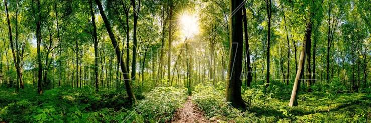

Intended for beginners and anyone wishing a grounded foundation in the practice of yoga, this 60 minute class of poses and slow movement focuses on asana(proper alignment and posture) pranayama(breath work), and guided meditation to foster your mind and body connection.Intended for beginners and anyone wishing a grounded foundation in the practice of yoga, this 60 minute class of poses and slow movement focuses on asana(proper alignment and posture) pranayama(breath work), and guided meditation to foster your mind and body connection.Intended for beginners and anyone wishing a grounded foundation in the practice of yoga, this 60 minute class of poses and slow movement focuses on asana(proper alignment and posture) pranayama(breath work), and guided meditation to foster your mind and body connection.
Although designed for intermediate to advanced students, beginners are welcome to sample this 60 minute class that focuses on breath-synchronized movement - you will inhale and exhale as you flow energetically.Although designed for intermediate to advanced students, beginners are welcome to sample this 60 minute class that focuses on breath-synchronized movement - you will inhale and exhale as you flow energetically.Although designed for intermediate to advanced students, beginners are welcome to sample this 60 minute class that focuses on breath-synchronized movement - you will inhale and exhale as you flow energetically.